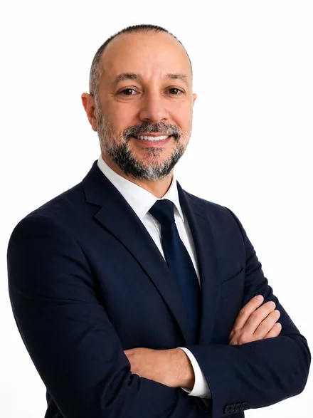

So tenere insieme tecnici, dati e scadenze nell'industria. Ho aggiunto AI e automazione. Cerco un'azienda in cui usare entrambe le cose.

Laureato in Ingegneria Gestionale a Bologna. Ho coordinato team tecnici, gestito dati di produzione e rispettato scadenze che non aspettano. So com'è quando un problema non ha soluzione nel manuale e bisogna costruirsela.
Negli ultimi anni ho affiancato a questo background competenze su AI e automazione: ho costruito tool funzionanti con Claude API, Python e n8n, e li ho usati su problemi reali, non come esercizi accademici.
Capire i processi e saper costruire gli strumenti per migliorarli: è il valore aggiunto che voglio portare in un team.
Non sono un tecnico puro né un manager tradizionale. Sono la persona che sta nel mezzo e fa funzionare le due parti insieme.
Ho gestito team tecnici. So come si parla a un operatore, a un capo reparto e a un direttore, usando il linguaggio che ognuno capisce.
Leggo un report di produzione, costruisco una dashboard, individuo l'anomalia. I dati non sono fine, sono il mezzo per prendere decisioni migliori.
Non fermo il problema all'analisi. Se serve uno strumento, lo costruisco. I sei tool nel portfolio sono partiti da problemi reali.
Non arrivo con soluzioni preconfezionate. Prima osservo come funziona davvero il lavoro, dove si perde tempo, dove le informazioni si bloccano. Solo dopo propongo qualcosa.
Ogni progetto nasce da situazioni che ho vissuto direttamente sul lavoro. I dati di esempio sono fittizi, ma costruiti su casi reali: sono gli strumenti che avrei voluto avere durante le mie attività quotidiane.
Un documento aziendale (preventivo, contratto, email, bando) riassunto in 5 sezioni: cosa include, punti critici e condizioni chiave. Demo con esempi pronti e dati fittizi.
Contratti, offerte fornitori, specifiche tecniche: invece di leggerli tutti, chiedi direttamente.
I KPI settimanali di un reparto diventano un briefing: executive summary, cosa ha funzionato, anomalie e punti per la riunione. Demo con dati fittizi e briefing preparato in anticipo.
Visione completa di un'operazione in pochi secondi, prima ancora di aprire un documento.
Prototipo di CRM per piccole aziende di servizio: anagrafica clienti, interventi aperti e pipeline commerciale in un unico posto. La demo usa 12 clienti di esempio.
Clienti, interventi e opportunità in un solo posto, con esportazione dei clienti in CSV.
Prototipo con dati di esempio: un clic carica un caso già pronto e mostra come la descrizione di un lavoro diventa una bozza di preventivo da rivedere.
Il caso di esempio mostra il flusso completo, dalla richiesta del cliente alla bozza.
Prototipo per il tecnico sul campo: timer degli orari, firma del cliente su schermo e rapportino generato dall'AI. In questa demo l'intervento e il testo sono di esempio.
Pensato per compilare il rapportino in pochi minuti, direttamente dal telefono.
Dashboard direzionale costruita su un dataset commerciale di esempio (9.994 transazioni, 2014–2017): KPI, margini e andamenti per segmento, categoria e regione.
Un esempio di report direzionale: i numeri chiave e dove guardare per decidere.
Non cerco necessariamente un titolo specifico. Cerco un'azienda che abbia processi reali da migliorare e voglia qualcuno capace di stare nel mezzo: tra il campo e la strategia, tra le persone e gli strumenti.
Operations, coordinamento, gestione tecnica, post vendita. Qualsiasi ruolo in cui servano ordine, metodo e la capacità di portare innovazione senza rompere quello che già funziona.
Industria, logistica, servizi, distribuzione. Settore poco importa: quello che conta è che ci siano processi concreti su cui lavorare, non solo slide da presentare.
Bologna e provincia come prima scelta. Aperto anche a Ferrara e Modena. Disponibile sia in presenza che in modalità ibrida.
PMI strutturate con autonomia operativa e voglia di migliorare. Lavoro meglio dove c'è fiducia nel metodo, non solo nel risultato finale.
Rispondo entro 24 ore. Niente form complicati, niente procedure: una mail o un messaggio LinkedIn bastano.